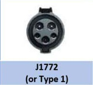
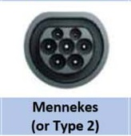
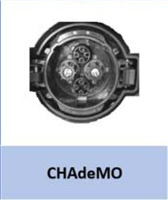
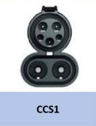
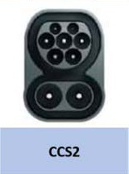

Addresse: Nygårdsidå, 4364 Sirevåg
Geo lokasjon: 58.502994, 5.797285
Trykk her for veibeskrivelse til ladestasjon Sirevåg
Ladekontakter:





Tilgjengelig ladeeffekt:
Ladestasjonen kan brukes på båter med batterikapasitet:
Priser
Andre tjenester
Ladetid kalkulator
inputs
tabell
graf